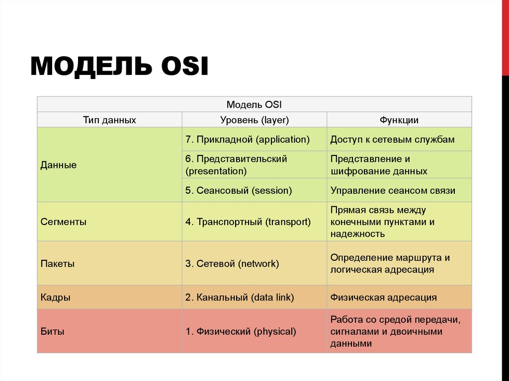

Научный руководитель Алексеев Михаил Николаевич
Консультант Прядка Владислав Сергеевич
Сети играют важную роль в нашей жизни, их использование распространено везде. Следовательно, к проблемам безопасности сетей и удаленного взлома становится все больше внимания. Так, одними способов защиты сетей является анализ сетевых пакетов.Анализатор сетевых пакетов (англ. Network Packet Analyzer) — это программное обеспечение, которое используется для анализа сетевого трафика. Оно отображает информацию о передаче данных по сети, а также позволяет отслеживать, какой источник отсылает данные другому узлу.
Целью данной курсовой работы является разработка анализатора сетевых пакетов на языке Python.
В рамках курсовой работы было поставлено несколько задач:
|
|
 |
Структура сервиса представляет собой четыре метода: analyze_port(), analyze_tcp(), analyze_http(), main(). |
Основные результаты работы
Для тестирования работы использовалась консольная строка. На экране вы можете видеть вывод интерфейса для пользователя, вывод данных по введенному пользователем порту или выбору анализа. После программа выводит углубленные данные (различную информацию о сетевых пакетах, IP-адрес отправителя, IP-адрес получателя, протокол, длина пакета и другие параметр). А также совершает проверку на невнимательность.
Заключение
В результате вытолнения курсовой работы был разработан анализатор сетевых пакетов на языке Python использованием библиотеки сару, Были выполнены поставленные задачи.
Анализатор сетевых пакетов является актуальным инструментом для решения различных задач
области сетевых технологий. Он помогает обеспечивать безопасность сети, оптимизировать ее рабол управлять трафиком и решать другие задачи.